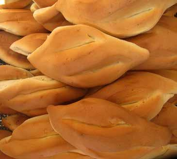

Masita1
El Pan
El producto mas Famoso y universal el ¡pan! las hay de todos los tipos, tamaños, formas, olores, sabores; para todos los gustos una lista interminable en nuestro pais, esos que no pueden hacer falta en la mesa de un buen desayuno boliviano.
Un poco sobre el Pan
El "pan de batalla", se consume en todos los hogares, su forma ha llegado tan lejos que le ha valido el ser declarado "Patrimonio cultural e historia de La Paz, el año 2006. Siendo el pan de cada dia en los hogares bolivianos, este acompaña nuestras vidas desde el desayuno hasta la rica variedad de platos de lunes a domingo.
En nuestro pais hay diferentes panes tradicionales , menciones los mas populares del Departamento de Oruro:
- Pan Chama - Cuando a la masa de harina blanca se le aumenta una porción de afrechillo
- Pan Sarnoso - Al que esta adornado con queso desmenuzado por encima.
- Pan Coliza - A los que tienen forma cuadrada y punteados
- Pan Lulo - Son alargados y con dos incisiones a lo ancho
- Pan Integral - Al que esta elaborado con harina de trigo del País, pura, a la que no se ha cernido el afrecho ni el afrechillo
- Pan Hallulla -Panes redondos que están cortados por moldes insustituíbles.
- Pan Muela- (pan de dos o tres puntas)- A los que tienen dos o tres puntas por encima
- Pan Ch'oko - Con una incisión central a lo largo
| Pan de Oruro | |||
|---|---|---|---|
| Chama | Integral | ||
| Sarnoso |  | Hallulla | |
| Coliza | Muela | ||
|  | Lulo | Choko | |